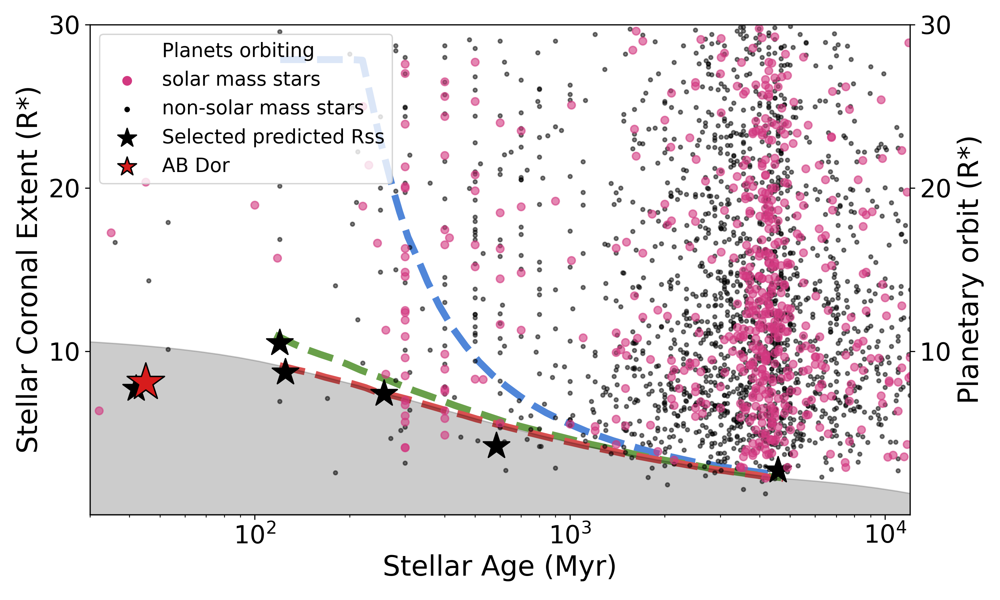
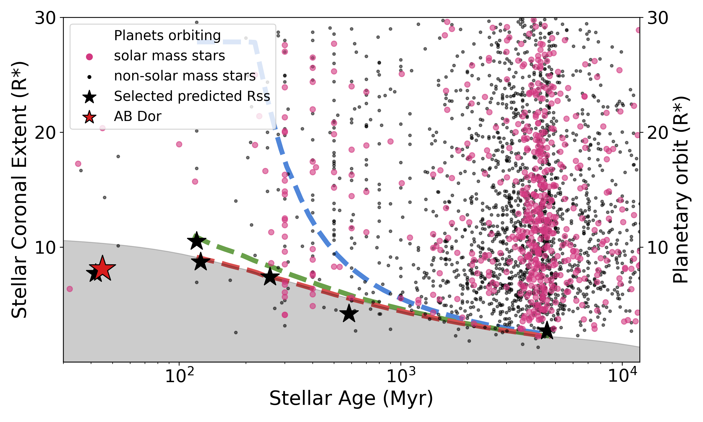

Astropy
I am a member of the Astropy Coordination Committee, as well Astropy Learn Coordinator.
I am an NSF Astronomy and Astrophysics Postdoctoral Fellow based at Lowell Observatory in Flagstaff, Arizona where I am collaborating with Drs. Melodie Kao and Joe Llama. My research interests include the magnetic fields of low-mass stars and substellar objects, specifically radio signatures of stellar coronae, and multi-wavelength studies of stellar flares. In addition to stellar astronomy, I am a dedicated astronomical software developer with a particular interest in astronomical data sonification.
 

In my most recent paper (Brasseur et al. 2024) I showed that the sun-like star AB Dor must have an extended magnetic corona (8-10 stellar radii). I used a 3D magnetic field extrapolation based on a spectropolarimetic magnetic field map to create synthetic radio observations which I then compared to real data. With an extended corona I was able to successfully reproduce persistent large scale structures observed around AB Dor at 8.4 GHz.
In collaboration with Dr. Rachel Osten, I have produced two studies of stellar flares in the optical and near-ultraviolet. In Brasseur et al. 2019 we present a collection of short-duration ultra-violet flares in data from the GALEX space telescope. In Brasseur et al. 2023 we combine the GALEX data with coincident optical data from the Kepler space telescope. In this study we show that current flare models significantly underestimate the amont of UV radiation as compared to optical flux, and highlight the need for more physically grounded approximations for flare energy fractionation.
A selection of talks and tutorials that I have given for which there are materials available online.
MSc dissertaion github repository and pdf.

I am a member of the Astropy Coordination Committee, as well Astropy Learn Coordinator.
I am the lead developer and maintainer of Astronify, a package for sonifying astronomical data, particularly timeseries data such as light curves.
I was the original developer (from inception until August 2021) of Astrocut, a package of cutout tools for astronomical data. It offers efficent cutouts of Transiting Exoplanet Survey Satellite full-frame image sets as well as more generic "fits-cut" tools. Astrocut is the software that backs the TESScut and zCut cutout services.
I am also a composer. This is a selection of recordings of my pieces as well as my masters thesis.